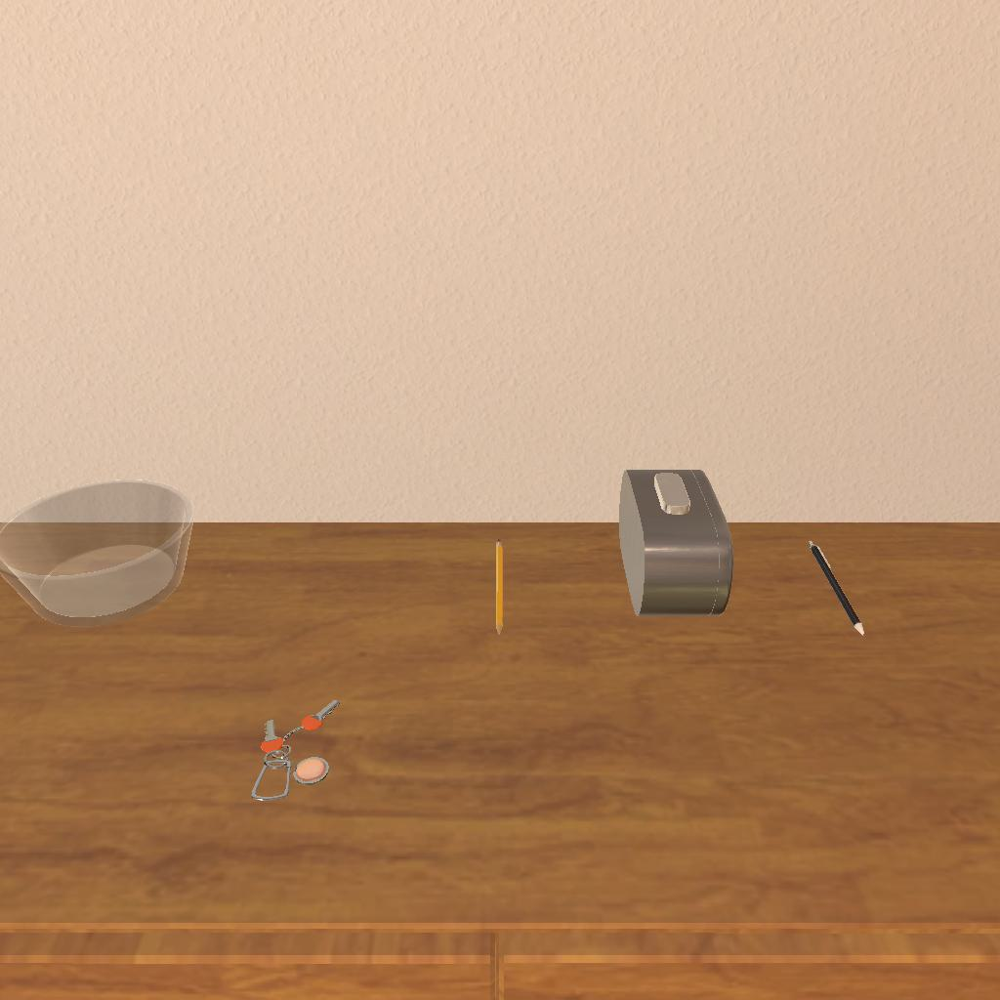
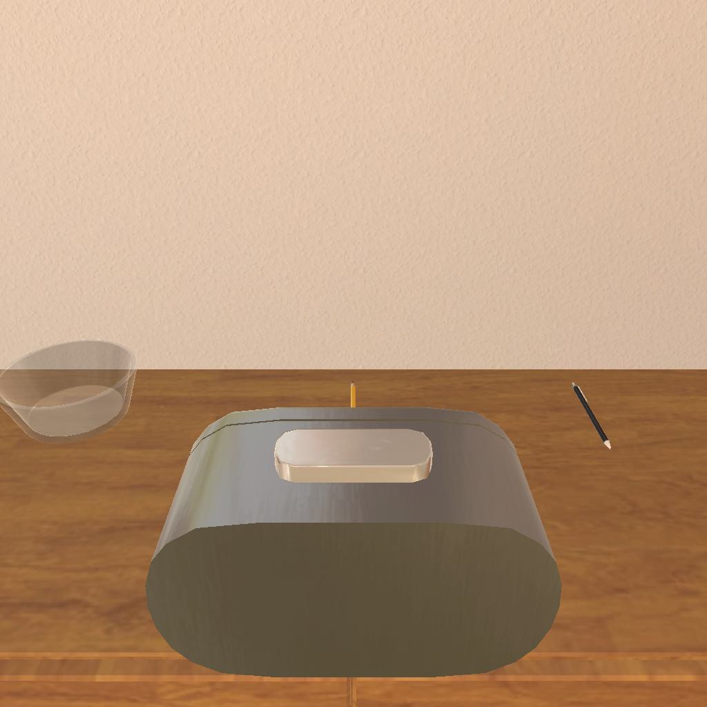

---------------------------------------------------------task: 0---------------------------------------------------------
--------------------------------------------------------------------------------------------------------------------------------------------------------------------
--------------------------------------------------------------------------------------------------------------------------------------------------------------------
Step:--------------------------------------------------------------------------11-------------------------------------------------------------------------------
----------------------------------------
VLM Prompt:
Image1:
Image2:
**Instruction**
1. Analyze the provided images to identify all visible household objects and compare the difference between images (e.h. whether the object is opened or not and taken on hand or not), focusing on those relevant to the task description "look at alarmclock under the desklamp."
2. Use the analysis of images and the task hint "The agent must find an object of the desired type, locate and turn on a light source with the desired object in-hand." to answer the question: what is the most reasonable action in the choices for the task description "look at alarmclock under the desklamp"?
3. Decide and write the answer using the template: The answer is: (i): , where i is the real number. If there is no desired object in images, search every place based on **Initial Observation** to find the object. And if no one is exactly correct, choose a similar answer.
**Initial Observation**
You are in the middle of a room. Looking quickly around you, you can see bed (1), sidetable (1), drawer (1-11), dresser (1), safe (1), laundryhamper (1), garbagecan (1)
**Answer Choices**
(1): go to bed 1
(2): go to drawer 1
(3): go to drawer 2
(4): go to drawer 3
(5): go to drawer 4
(6): go to drawer 5
(7): go to drawer 6
(8): go to drawer 7
(9): go to drawer 8
(10): go to drawer 9
(11): go to drawer 10
(12): go to drawer 11
(13): go to safe 1
(14): go to laundryhamper 1
(15): go to garbagecan 1
(16): put alarmclock 1 in/on dresser 1
(17): examine alarmclock 1
(18): examine dresser 1
**Answer**
Let's think step by step by following the instructions.
----------------------------------------
----------------------------------------
Original Response:
1. Analyzing the images:
- Image 1 shows a desk with several objects: a bowl, a pencil, a pen, scissors with orange handles, tape, and a yellow pencil. There is also something that could be an alarm clock under the desklamp, as it is the only object that resembles an alarm clock and is positioned under the desklamp.
- Image 2 shows the same desk, but now the desklamp is turned on, illuminating the object under it, which confirms that it is an alarm clock.
2. Based on the task hint and the analysis of the images, the agent must find the alarm clock and turn on the light source with the alarm clock in hand. The most reasonable action for the task description "look at alarmclock under the desklamp" would be to first locate the alarm clock and then turn on the desklamp to examine the alarm clock.
3. From the answer choices provided, the most reasonable action is not directly listed. However, since the alarm clock is already under the desklamp, and the desklamp is turned on in Image 2, the agent does not need to move the alarm clock or the desklamp. Therefore, the closest action to the task would be to examine the alarm clock under the desklamp.
The answer is: (17): examine alarmclock 1.
----------------------------------------
----------------------------------------
>>> Refine Original VLM Response and Get Pure Action: examine alarmclock 1
----------------------------------------
-----------------------------------------------------------------
Running time: 53.99464821815491 seconds
Total Money: 0.32777
-----------------------------------------------------------------
-----------------------------------------------------------------
Text Observation:This is a normal alarmclock 1
-----------------------------------------------------------------
UNSUCCEED